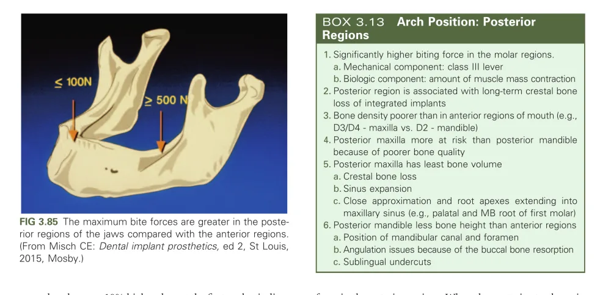
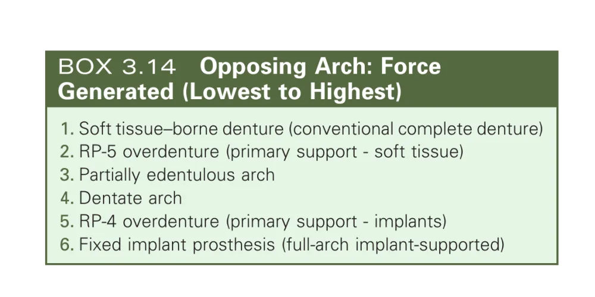

نسخه استخراجشده؛ ترجمه یا تأیید علمی انجام نشده است. وضعیت: captured
در یونیت ۲٫۳ دیدی که ماگزیلای خلفی هم ضعیفترین استخوان را دارد و هم بیشترین نیرو را میگیرد. این درس آن مشاهده را به یک رتبهبندی صریح تبدیل میکند.
نخست، اصلی که رتبهبندی را میسازد:
«تراکم استخوان بیدندان با مقدار نیرو و سطح ریشههای دندان طبیعی که عموماً در آن موقعیت قوسی اعمال میشود، رابطهی معکوس دارد.»
این جمله را دو بار بخوان. یعنی هرچه آن ناحیه در حالت طبیعی نیروی بیشتری میگرفته، پس از بیدندان شدن استخوان ضعیفتری دارد. رابطه معکوس است، نه مستقیم — و این خلاف شهود اولیه است.
و رتبهبندی که از آن برمیآید:
«در نتیجه، ماگزیلای خلفی پرخطرترین موقعیت قوسی است، سپس مندیبل خلفی، و سپس ماگزیلای قدامی. ایدهآلترین ناحیه برای انتقال استرس ایمپلنت درون ناحیهی بارگذاری فیزیولوژیک استخوان، ناحیهی قدامی مندیبل است.»
این چهار رتبه را حفظ کن — از بدترین به بهترین:
ماگزیلای خلفی ← مندیبل خلفی ← ماگزیلای قدامی ← مندیبل قدامی
و دقیقاً همان ترتیب فرضهای تراکم از یونیت ۲٫۳ است (D4 ← D3 ← D3 ← D2) — و این تصادفی نیست، چون رتبهبندی از همین تراکم بیرون میآید.
و اکنون شش دلیل پرخطر بودن نواحی خلفی (کادر ۳٫۱۳):
۱. نیروی گاز بهطور چشمگیری بالاتر در نواحی مولر — با دو مؤلفه: مکانیکی (اهرم کلاس III) و زیستی (مقدار انقباض تودهی عضلانی).
۲. ناحیهی خلفی با تحلیل بلندمدت استخوان کرستال ایمپلنتهای اینتگرهشده مرتبط است.
۳. تراکم استخوان ضعیفتر از نواحی قدامی — D3/D4 در ماگزیلا در برابر D2 در مندیبل.
۴. ماگزیلای خلفی پرخطرتر از مندیبل خلفی بهدلیل کیفیت ضعیفتر استخوان.
۵. ماگزیلای خلفی کمترین حجم استخوان را دارد — بهدلیل تحلیل کرستال، گسترش سینوس، و نزدیکی و امتداد اپکس ریشهها به داخل سینوس (مثلاً ریشهی پالاتال و مزیوباکال مولر اول).
۶. مندیبل خلفی ارتفاع استخوان کمتری از نواحی قدامی دارد — بهدلیل موقعیت کانال و فورامن مندیبولار، مسائل زاویهبندی ناشی از تحلیل استخوان باکال، و آندرکاتهای زیرزبانی.
و عددی که شدت را نشان میدهد: «نیروها در مولر دوم ۱۰ درصد بیشتر از مولر اول بود، که نشاندهندهی بازهای از ۱۴۰ تا ۲۷۵ psi است.»
و اکنون مقایسهی قدام ماگزیلا با قدام مندیبل — که ظریف است:
نهتنها استخوان در قدام مندیبل متراکمتر است، بلکه «جهت نیرو هم برای دندانهای قدامی پایین بیشتر در امتداد محور طولی است.»
و عددی برای اثر زاویه: «بار زاویهدار ۱۲ تا ۱۵ درجه در ایمپلنتهای قدامی ماگزیلا، نیرو را تقریباً ۲۵ درصد افزایش میدهد.»
و نکتهای که نتیجهگیری ساده را رد میکند:
«توجه کن که دندانهای قدامی ماگزیلا قطر بیشتر و سطح بزرگتری در مقایسه با کوچکترین دندانهای دهان، یعنی انسیزورهای مندیبل، دارند. مقدار نیرو مشابه است، ولی جهت نیرو دندانهای ماگزیلا را در خطر بیشتری قرار میدهد.»
مقدار یکسان، جهت متفاوت. این یک درس تکرارشوندهی کل مسیر است — جهت نیرو بهاندازهی مقدارش اهمیت دارد.
و در پایان، دادهای که همهی این بحث را با یک عدد بلندمدت تأیید میکند:
یک مطالعهی بلندمدت: ۳۳۹ ایمپلنت در ۶۹ بیمار، با میانگین ۸٫۱ سال در عملکرد (بازهی ۳ تا ۲۴ سال).
«ایمپلنتهای خلفی — حتی با موکوز کراتینیزه — تحلیل استخوان سالانهی میانگین ۳٫۵ برابر بیشتری از ایمپلنتهای قدامی نشان دادند.»
سهونیم برابر، در طول سالها. و قید «حتی با موکوز کراتینیزه» مهم است: یعنی کیفیت بافت نرم بهتنهایی این تفاوت را توضیح نمیدهد. در ناحیهای که نیروی گاز بیشتر است، تحلیل استخوان بیشتری انتظار میرود.
و یک مؤلفهی زیستی که از یونیت ۱٫۴ میشناسی، اینجا تأیید میشود:
«وقتی دندانهای خلفی در تماساند، عضلات جوندهی بزرگ منقبض میشوند. وقتی دندانهای خلفی در تماس نیستند، دو سوم فیبرهای عضلات تمپورالیس و ماستر منقبض نمیشوند، که به کاهش نیروی گاز میانجامد.»
همان «دو سوم» که در بحث گاید کانین دیدی. و اینجا نشان میدهد چرا حذف تماس خلفی در اکسکورسیونها اینقدر قدرتمند است.
و اکنون یک نقد صریح به رویهی رایج — و این ارزش خواندن دقیق دارد:
نخست یک عدد: «بیشترین افزایش سطح دندان طبیعی در ناحیهی مولر رخ میدهد، با افزایش ۲۰۰ درصدی در مقایسه با پرمولرها.»
یعنی طبیعت در ناحیهی خلفی، سطح را سه برابر کرده تا نیروی بیشتر را تحمل کند.
و حالا ببین ما چه میکنیم:
«با این حال، در دندانپزشکی ایمپلنت، ما عمدتاً طول ایمپلنت را با حجم استخوان موجود تعیین میکنیم و ایمپلنتهای بلندتر را در ناحیهی قدامی و ایمپلنتهای کوتاهتر را در نواحی خلفی قرار میدهیم — یا از ایمپلنتهای قدامی کانتیلور میگیریم، که به تشدید نیروهای گاز خلفی با طول کانتیلور میانجامد.»
این دقیقاً وارونهی کاری است که طبیعت میکند. طبیعت در خلف سطح را زیاد میکند؛ ما در خلف ایمپلنت را کوچکتر میکنیم.
و نتیجه: «این رویکرد باید اصلاح شود تا با بار بیومکانیکی مشابه آنچه در دندانهای طبیعی مشاهده میشود همخوان شود.»
و اکنون راهحل — با یک رتبهبندی صریح از ابزارها:
«با این حال، طول یک ایمپلنت برای پخش نیرو کماثرتر است. در عوض، عرض و طراحی ایمپلنت مؤثرترند. بهترین گزینه برای کاهش استرس، افزایش شمار ایمپلنت است.»
سه ابزار، به ترتیب اثربخشی: شمار ← عرض و طراحی ← طول. و طول در انتهای فهرست است، هرچند اغلب نخستین چیزی است که به آن فکر میشود.
و توصیهی نهایی: «ایمپلنتهای نواحی خلفی باید اغلب قطر بیشتر یا شمار بیشتری داشته باشند (چون مولرها ریشههای بیشتری دارند)، بهویژه در حضور عوامل نیروی افزوده.»
و قید داخل پرانتز را نگه دار — «چون مولرها ریشههای بیشتری دارند». این همان منطق «یک ایمپلنت برای هر ریشه» است که در یونیت ۲٫۲ در سختترین سناریو دیدی. اینجا میبینی که آن توصیه یک استثنا نبود؛ کاربرد یک اصل عمومی بود.

این عامل را اینطور بشناس: «عاملی که اغلب در فرآیند طرحریزی درمان نادیده گرفته میشود، قوس مقابل است.»
و اصل پایه: «بهطور کلی، دندانهای طبیعی نیروهای ضربهای بیشتری از طریق تماسهای اکلوزال منتقل میکنند تا دنچرهای کامل بافتنرمبر.»
و عددی برای دنچر: «حداکثر نیروی اکلوزال بیماران با دنچر کامل محدود است و ممکن است از ۵ تا ۲۶ psi باشد.»
و یک نکتهی زمانی: «نیرو معمولاً در استفادهکنندگان تازهی دنچر بیشتر است و با گذر زمان کاهش مییابد.» — بهدلیل آتروفی عضلانی، نازک شدن بافتها با سن یا بیماری، و آتروفی استخوان.
و عددی در سوی دیگر طیف: «یک پروتز ثابت کامل ایمپلنت از پروپریوسپشن مانند دندانهای طبیعی بهره نمیبرد، و بیماران غذا را با نیرویی چهار برابر بیشتر از دندانهای طبیعی میجوند.»
چهار برابر. و دلیلش را از یونیت ۱٫۴ میدانی — نبود بازخورد حسی.
و اکنون رتبهبندی نخست (کادر ۳٫۱۴) — نیروی تولیدشده، از کمترین به بیشترین:
۱. دنچر بافتنرمبر (دنچر کامل متعارف)
۲. اوردنچر RP-5 (پشتیبانی اولیه: بافت نرم)
۳. قوس بخشیبیدندان
۴. قوس دنداندار
۵. اوردنچر RP-4 (پشتیبانی اولیه: ایمپلنت)
۶. پروتز ثابت ایمپلنت (قوس کامل ایمپلنتپشتیبان)
به رتبههای ۴ و ۵ خوب نگاه کن. اوردنچر RP-4 نیروی بیشتری از قوس دنداندار طبیعی تولید میکند — و پروتز ثابت ایمپلنت از همه بیشتر. یعنی موفقترین درمانهای ما، پرنیروترین قوسهای مقابل را میسازند.
و تفاوت RP-4 و ثابت: «یک اوردنچر RP-4 ممکن است در مقایسه با پروتز ثابت حرکت اندکی داشته باشد و بیشتر احتمال دارد دندان آکریلی یا رزینی داشته باشد. بنابراین نیروی گاز اندکی کمتر از یک پروتز ثابت ایمپلنت قوس کامل است.»
و یک تعدیل مهم در ارزیابی این عامل:
«قوس مقابل بهاندازهی پارافانکشن، دینامیک جویدن یا CHS بیشازحد، عامل مهمی برای تغییر طرح درمان ایمپلنت نیست، ولی عامل مهمی برای خطر شکست پرسلن یا پروتز است.»
این کالیبراسیون را نگه دار: قوس مقابل شمار ایمپلنت را چندان تغییر نمیدهد، ولی انتخاب ماده را تغییر میدهد. و نگه داشتن دنچر در قوس مقابل فقط برای کم کردن استرس بهندرت توجیه دارد، چون استخوان قوس بیدندان به تحلیل ادامه میدهد.
و اکنون رتبهبندی دوم — که مستقیماً همان انتخاب ماده را هدایت میکند (کادر ۳٫۱۵):
شکست پرسلن کراون ایمپلنت بر پایهی قوس مقابل، از کمترین به بیشترین خطر:
۱. دنچر کامل: ۰ درصد
۲. دندانهای طبیعی: ۳٫۲ درصد (۱۹٫۴ درصد بیماران)
۳. کراون روی دندان طبیعی: ۵٫۷ درصد
۴. کراون ایمپلنت: ۱۶٫۲ درصد (۶۹٫۵ درصد بیماران)
حالا به این اعداد خوب نگاه کن.
از صفر تا ۱۶٫۲ درصد — و متغیری که در این مقایسه عوض میشود، آنچه در قوس مقابل است.
و عدد داخل پرانتز حتی گویاتر است: وقتی قوس مقابل کراون ایمپلنت است، ۶۹٫۵ درصد بیماران دستکم یک شکست پرسلن را تجربه میکنند. یعنی بیش از دو نفر از هر سه بیمار.
پس اگر هر دو قوس را با ایمپلنت ثابت درمان میکنی، انتخاب ماده دیگر یک ترجیح نیست؛ یک ضرورت است. و از یونیت ۲٫۱ میدانی که در مقایسهی مواد FP-3، زیرکونیای مونولیتیک در «نیروهای ضربهای» و «بلندمدت» رتبهی «عالی» گرفت؛ آن رتبه همینجا به کار میآید.
و یک سازوکار که چرخه را میبندد:
«افزون بر این، تماسهای زودرس در الگوهای اکلوزال یا حین پارافانکشن روی پروتزهای ایمپلنت، مسیر بسته شدن را تغییر نمیدهند، چون آگاهی اکلوزال در پروتزهای ایمپلنت در مقایسه با دندانهای طبیعی کاهش یافته است. افزایش مداوم استرس را میتوان با ترمیم ایمپلنت انتظار داشت.»
این جمله دو یونیت را به هم گره میزند. در یونیت ۱٫۴ آموختی که تماس زودرس روی ایمپلنت مخربتر است چون بیمار آن را حس نمیکند. روی پروتز ایمپلنتی، آگاهی اکلوزال کم است و تماس زودرس مسیر بسته شدن را عوض نمیکند؛ پس سازوکار خودتصحیح دندان طبیعی اینجا کار نمیکند و افزایش مداوم استرس را باید انتظار داشت. و وقتی قوس مقابل هم ایمپلنتی است، از هیچ سو بازخورد حسی نمیآید.
